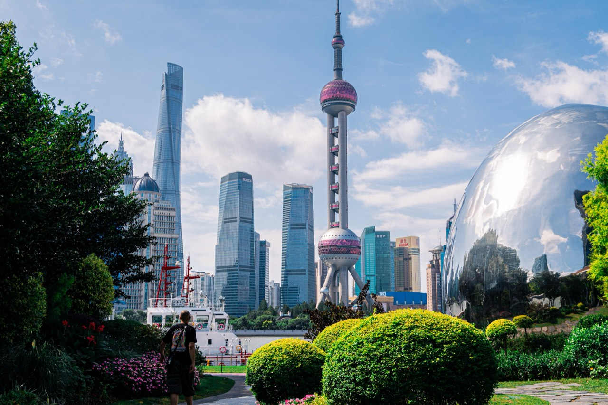
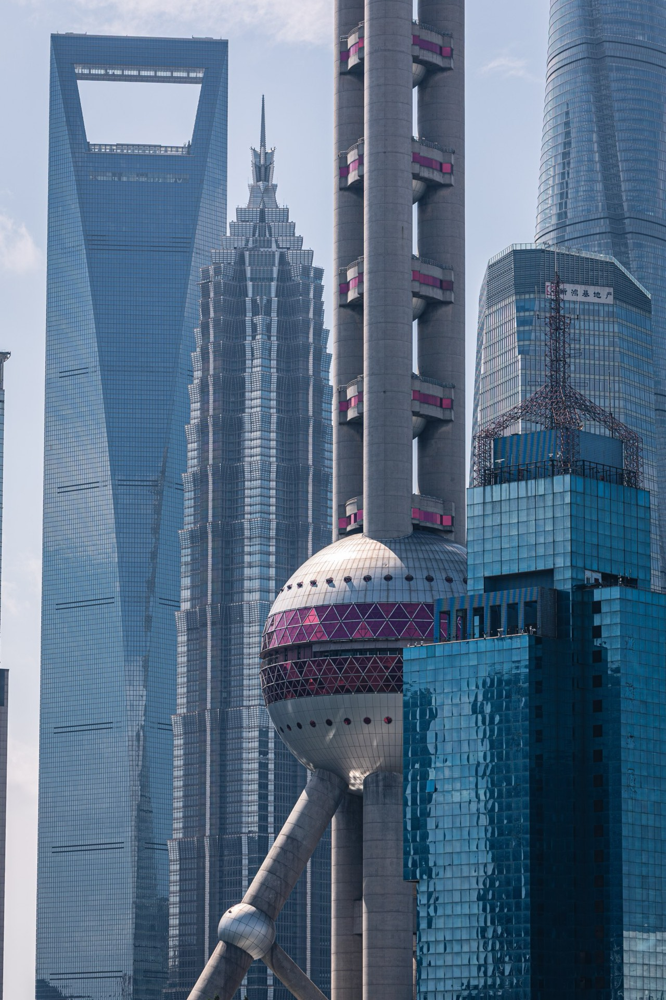
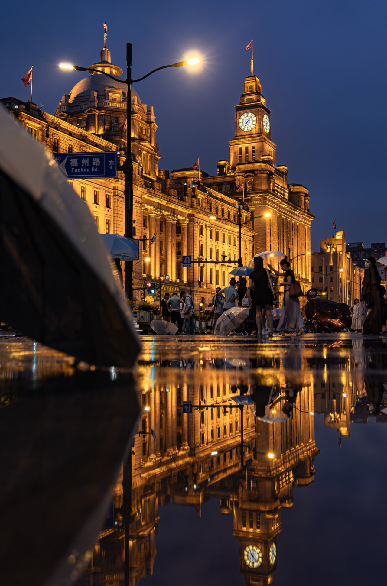
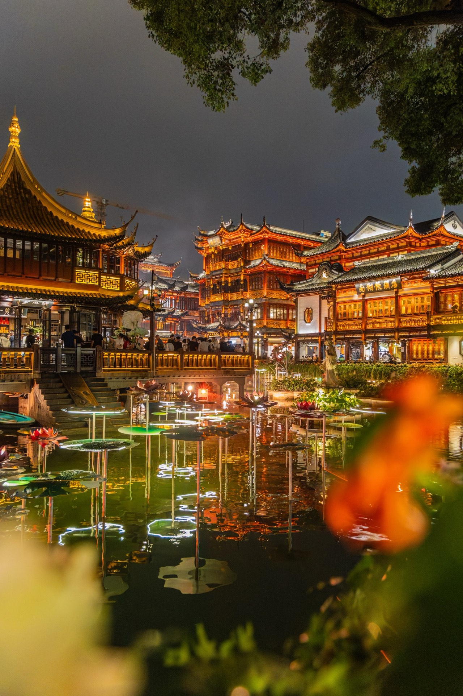

China
Shanghai, Hangzhou, Zhangjiajie, Chongqing
2026.6
Photographs






The guide for this country is not written yet.
Back to destinationsShanghai, Hangzhou, Zhangjiajie, Chongqing
2026.6




The guide for this country is not written yet.
Back to destinations